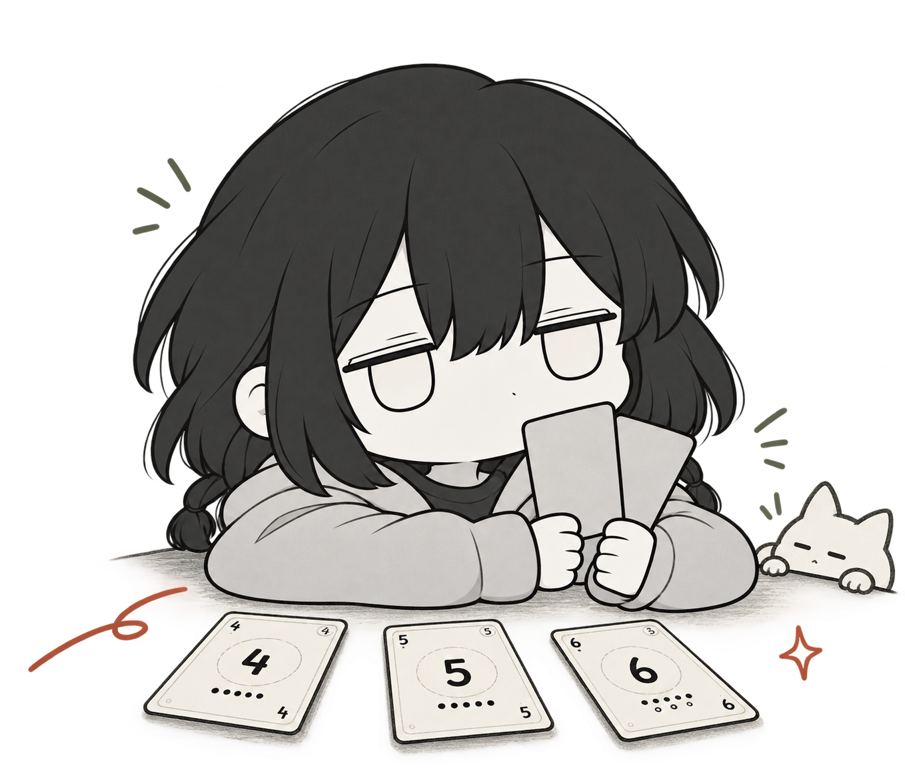

两种牌桌，两种胜法。
01 / HOW TO PLAY先清空手牌，赢下这一局。
暗置出示，同时翻牌。用叠牌与顺牌组合点数，再决定弃掉自己的牌，还是拿走对手的牌。
- 01组合你的手牌
- 02藏好你的意图
- 03把握清牌时机
4+48
两张同点，叠出新机会。
从基本牌开始，一步步加深策略。
36 张基本牌，专注点数、叠牌、顺牌与伪装。
术点完整版的事件效果仍在完善中；王国完整版暂未开放。
同一副牌，不同的你。
十一位角色，十一种破局思路。找到适合你的那一种。
武士
THE WARRIOR
「慢慢来，也能赢。」
武魂
开局选择决斗或剑刃：主动比对总点数 +3，或获得不占手牌的 3 点剑刃。
角色能力在高阶版开启；两种模式使用各自的技能规则。
把牌桌，翻给你看。
03 / IN GAME02 / 04
落座之前，
你也许想知道。
现在可以下载游戏吗？
游戏仍在完善中。正式下载与商店入口将在准备好后公布。
可以和朋友联机吗？
当前版本为单人与 AI 对战。你可以挑战白呜；术点普通版还提供白墨和白冥，另有最高难度的作者对手 YvanLouise。目前尚未提供联机对战。
王国完整版开放了吗？
王国普通、进阶和高阶版已实现。完整版的专属事件系统暂未开放；术点完整版的事件目前也仍为占位效果，正式内容将继续完善。
下一手，等你来。
术点牌仍在持续打磨。玩法、美术与每一次出牌，都在慢慢变得更好。
开发进行中